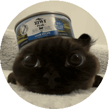

Safety stack
Moderation, AutoMod, verification, logging, and raid protection for the hard edges of a server.
independent software studio / 2026
We build considered software for the places people gather online. Useful systems, clear interfaces, and fewer things that get in the way.
the studio
02 / 05Whitebots is a small team making large-surface software feel simple. We care about the quiet details: sensible defaults, honest status, and interfaces that respect your attention.
Our work starts with communities and ends with infrastructure people can trust. No noise for noise's sake. Just capable tools, built to last.
See our capabilitiesour flagship system
03 / 05
product / 001THE cat Discord bot that does literally everything with one click.
Open ProwlModeration, AutoMod, verification, logging, and raid protection for the hard edges of a server.
Leveling, challenges, achievements, activity roles, reaction roles, giveaways, and birthdays.
Tickets, temp channels, invite tracking, global chat, autoresponders, social alerts, and reminders.
Chat, image generation, summaries, voice playback, and complete web control without commands.
the short version
04 / 05start a conversation
05 / 05We like useful problems, sharp questions, and projects with somewhere to go.
support.prowlbot.xyz@gmail.com